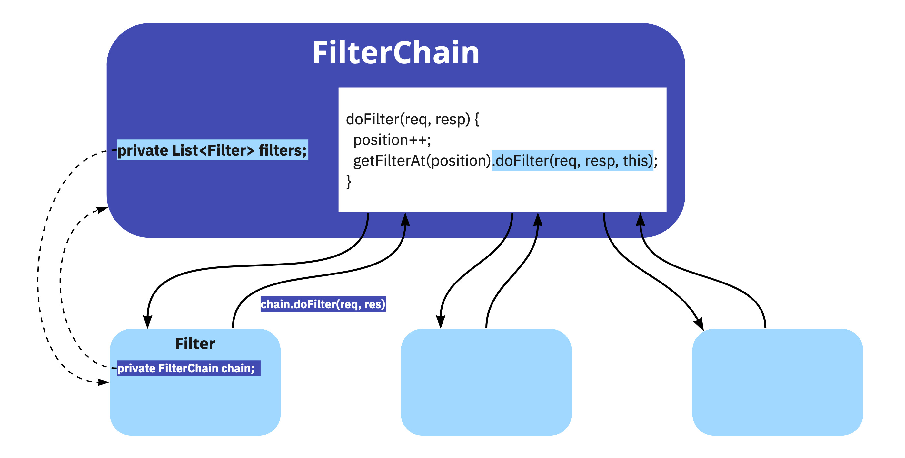
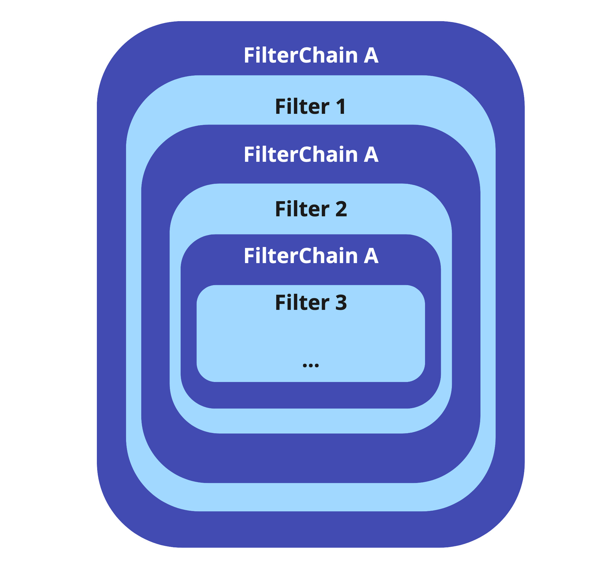
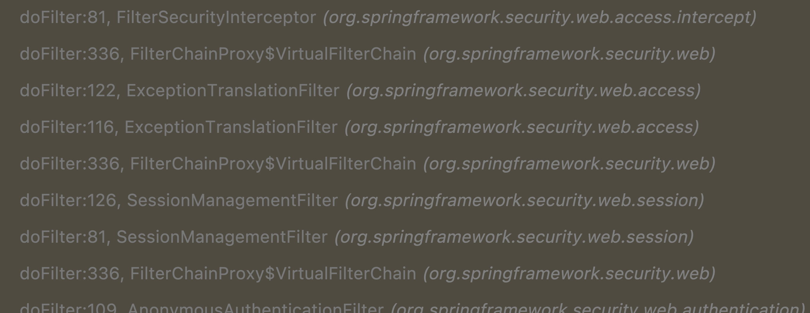
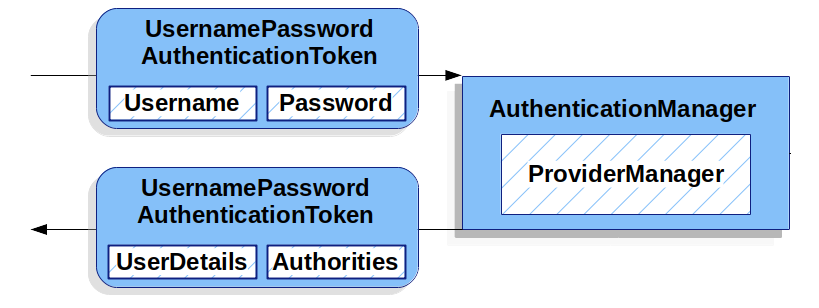

<!doctype html>
<html lang="en">

	<head>
		<meta charset="utf-8">

		<title>Spring Security - Demystified 🕵️</title>

		<meta name="description" content="...">
		<meta name="author" content="Daniel Garnier-Moiroux">

		<meta name="apple-mobile-web-app-capable" content="yes">
		<meta name="apple-mobile-web-app-status-bar-style" content="black-translucent">

		<meta name="viewport" content="width=device-width, initial-scale=1.0">

		<link rel="stylesheet" href="dist/reset.css">
		<link rel="stylesheet" href="dist/reveal.css">
		<link rel="stylesheet" href="dist/theme/white.css" id="theme">

		<!-- Theme used for syntax highlighting of code -->
		<link rel="stylesheet" href="plugin/highlight/vs.css">

    <style>
      .reveal pre {
        width: 100%;
      }

      .reveal :not(pre)>code {
        /* TODO */
        color: #a31515;
        padding: 2px 5px;
        background-color: #f8f8f8;
        border: solid 1px #ddd;
        border-radius: 3px;
      }

      button {
        border: none;
        background: none;
        font-size: 3rem;
      }

      :root {
        --r-heading-text-transform: none;
        --r-heading-color: #1958BF;
        --r-main-font: Open Sans, Source Sans Pro, Helvetica, sans-serif;
        --r-heading-font: Montserrat, Source Sans Pro, Helvetica, sans-serif;
      }

      .reveal h2 {
        margin-top: 2rem;
        margin-bottom: 3rem;
      }

      .reveal .slides section li.fragment.highlight-blue.visible {
        color: #EB8038;
        font-weight: bold;
      }
    </style>
	</head>

	<body>

		<div class="reveal">

			<!-- Any section element inside of this container is displayed as a slide -->
			<div class="slides">
        <section data-markdown data-background-image="images/fond_ecran_1080.png"
          data-background-size="contain">
          <script type="text/template">
            ## Spring Security - Demystified 🕵️

            

            Devoxx - 2022/10/11

            Daniel Garnier-Moiroux

            <button title="Click to open speaker notes view" onclick="Reveal.triggerKey(83)">📝</button>

            ---

            ## Daniel Garnier-Moiroux

            

            Software Engineer @ VMware (Tanzu Spring)

            https://garnier.wf/

            https://github.com/Kehrlann

            @Kehrlann


            
            Notes:
            That's me. Find me on the internet.

            I work at VMware, Tanzu Spring

            Spring Security contributor

            Teach CS to engineering students at Mines Paris

            ---

            ## Plan

            1. Demo: a baseline <!-- .element: class="fragment highlight-blue" -->
            2. Theory
                1. Authentication - "domain language"
                2. Filter - "HTTP building block"
                3. AuthenticationProviders - "to authenticate"
                4. Configurers - "navigate Spring Security"
                5. Spring Boot Auto-Configuration
            

            Notes:

            - We will cover a LOT of things, dense
            - Goal: make you autonomous on spring-sec
              - navigate spring-sec on your own
              - don't get stuck on StackOverflow
            - ANTI-goal: show you all cool detailed features
              - You wouldn't remember them anyway
            - Focus on authentication == identity, not so much on authorization
            - Only Servlet, no WebFlux (reactive)
              - Primitives are slightly different, no expert
            - Not Spring Security 6.0, although won't change EVERYTHING
              - The patterns are forward-compatible
            - Caveat: Intermediate level, NOT beginner
              - If you don't know spring, this may hurt

            ---

            ## Demo

            Follow-along:

            https://github.com/Kehrlann/spring-security-workshop-code

            Notes:

            - start.spring.io
            - gradle
            - java 17 (why not!)
            - Boot 2.7.x
            - web
            - NO dev tools, no security

            ---
            
            ## HelloWorldController.java

            ```java
            @RestController
            public class HelloWorldController {

              @GetMapping("/")
              public String publicPage() {
                return "Hello World!";
              }

              @GetMapping("private")
              public String privatePage() {
                return "Mmmmh, this should be private 🤔";
              }

            }
            ```

            Notes:

            - Classic Spring Boot, two pages, public and private
            - Show in browser

            ---

            ## build.gradle

            ```gradle [3]
            dependencies {
              implementation 'org.springframework.boot:spring-boot-starter-web'
              implementation 'org.springframework.boot:spring-boot-starter-security'
              testImplementation 'org.springframework.boot:spring-boot-starter-test'
            }
            ```

            Notes:

            - Add Spring Security
            - Show in browser
            - Show logs
            - Show SecurityAutoConfiguration
            - SPRINGSEC PATTERN: secure by default
              - show 403 everywhere
              - Do the same in your apps!

            ---

            ## SecurityConfig.java

            ```java
            @Configuration
            @EnableWebSecurity
            public class SecurityConfig {

              @Bean
              SecurityFilterChain securityFilterChain(HttpSecurity http) 
                  throws Exception {
                return http.authorizeRequests()
                      .antMatchers("/").permitAll()
                      .antMatchers("/error").permitAll() // error page
                      .antMatchers("/favicon.io").permitAll() // favicon
                      .anyRequest().authenticated()
                    .and().build();
              }
            }
            ```

            Notes:

            - SecurityFilterChain
            - First: "/private" .authenticated()
            - Then correct pattern
            - Notice: we can't log in!

            ---

            ## SecurityConfig.java

            ```java [11]
            public class SecurityConfig {

              @Bean
              SecurityFilterChain securityFilterChain(HttpSecurity http) 
                  throws Exception {
                return http.authorizeRequests()
                      .antMatchers("/").permitAll()
                      .antMatchers("/error").permitAll() // error page
                      .antMatchers("/favicon.io").permitAll() // favicon
                      .anyRequest().authenticated()
                    .and().formLogin()
                    .and().build();
              }
            }
            ```

            Notes:

            - Put login form back in
            - Still auto-generated password

            ---

            ## SecurityConfig.java

            ```java [13-14]
            @Configuration
            @EnableWebSecurity
            public class SecurityConfig {
              // [...]
              @Bean
              UserDetailsService userDetailsService() {
                return new InMemoryUserDetailsManager(
                    new User("user", "{noop}password", Collections.emptyList())
                );
              }
            }
            ```

            Notes:

            - We can create @Beans that do things
            - Find it in the guides
            - CF spring sec doc
            - Demo
            - Now we can turn on other spring-sec modules

            ---

            ## build.gradle

            ```gradle [4]
            dependencies {
              implementation 'org.springframework.boot:spring-boot-starter-web'
              implementation 'org.springframework.boot:spring-boot-starter-security'
              implementation 'org.springframework.boot:spring-boot-starter-oauth2-client'
              testImplementation 'org.springframework.boot:spring-boot-starter-test'
            }
            ```

            Notes:

            - Login with OAuth2 / OpenID
            - Are you familiar with OAuth2 ?
            - We won't describe the protocol in detail
            - Boot + Security: change the config,
            - => activate a new login type
            
            ---

            ## SecurityConfig.java

            ```java [12]
            public class SecurityConfig {

              @Bean
              SecurityFilterChain securityFilterChain(HttpSecurity http) 
                  throws Exception {
                return http.authorizeRequests()
                      .antMatchers("/").permitAll()
                      .antMatchers("/error").permitAll() // error page
                      .antMatchers("/favicon.io").permitAll() // favicon
                      .anyRequest().authenticated()
                    .and().formLogin();
                    .and().oauth2Login()
                    .and().build();
              }
            }
            ```

            Notes:

            - Activate new login
            - Spring Security Pattern: all config in one place!

            ---

            ## application.yml

            ```yaml
            spring:
             security:
              oauth2:
               client:
                 registration:
                   google: # magic name, [google|facebook|github]
                    client-id: "PLACEHOLDER"
                    client-secret: "PLACEHOLDER"
            ``` 

            Notes:

            - Add Google through console.cloud.google.com
            - Search Api Keys, Add new OAuth2 Login
            - redirect url: 

            `http://localhost:8080/login/oauth2/code/google`

            - Configure client-id/secret, login: tadaa!
            - Now, let's USE the authentication data

            ---

            ## HelloWorldController.java

            ```java [3-8]
            public class HelloWorldController {

              @GetMapping("private")
              public String privatePage(Authentication authentication) {
                return "Welcome to this very private page, ~[" 
                    + getName(authentication)
                    + "]~! 🥳🎉🍾";
              }

              private String getName(Authentication authentication) {
                // ...
              }
            }
            ```

            Notes:

            - Inject the Authentication
              - Spring Security Pattern: injection!
            - Print the name: for Google, ugly `sub` claim
            - We can extract the email claim

            ---

            ## HelloWorldController.java

            ```java
            public class HelloWorldController {

              private String getName(Authentication authentication) {
                return Optional.of(authentication)
                  .filter(OAuth2AuthenticationToken.class::isInstance)
                  .map(OAuth2AuthenticationToken.class::cast)
                  .map(OAuth2AuthenticationToken::getPrincipal)
                  .map(OidcUser.class::cast)
                  .map(StandardClaimAccessor::getEmail)
                  .orElseGet(authentication::getName);
              }
            }
            ```

            Notes:

            - Touchy though, I have notes
            - Requires breakpoint + inspecting Authentication

            ---

            ## So?

            A bit ... complex, isn't it? <!-- .element: class="fragment" -->
            
            Notes:

            - Complicated, innit?
            - Complex: many threads weaved together

            ---

            ## Plan

            1. Demo: a baseline
            2. Theory
                1. Authentication - "domain language" <!-- .element: class="fragment highlight-blue" -->
                2. Filter - "HTTP building block"
                3. AuthenticationProviders - "to authenticate"
                4. Configurers - "navigate Spring Security"
                5. Spring Boot Auto-Configuration

            Notes:

            - Again: I don't expect you to reproduce this after the talk
            - I don't even expect you to commit this to memory
            - Just show case that it's powerful BUT complex
            - Have a substrate to discuss things

            ---

            ## Consuming Authentication objects

            Spring Security produces `Authentication`. They are used for:
            - Authentification (`authn`): _who_ is the user?
            - Authorization (`authz`): is the user _allowed to perform_ XYZ?

            ---

            ## Vocabulary

            - **Authentication**: represents the user. Contains:
              - **Principal**: user "identity" (name, email...)
              - **GrantedAuthorities**: "permissions" (`roles`, ...)

            More details: https://docs.spring.io/spring-security/reference/servlet/authentication/architecture.html

            Notes:

            - Authentication: what SpringSec produces, an "entity Authenticated", user, machine, ...
            - Principal: "who" is authenticated, what's most interesting to you
              - e.g. name, e-mail address, client_id, etc.
            - GrantedAuthorities
              - Often "ROLE_admin"
              - Often a wrapper around a simple string
              - Not our focus today, we are focusing on identity

            ---

            ## Vocabulary (cont')

            - **Authentication** also contains:
              - **.isAuthenticated()**: almost always `true`
              - **details**: details about the _request_
              - (Credentials): "password", often `null`
            
            More details: https://docs.spring.io/spring-security/reference/servlet/authentication/architecture.html


            Notes:

            - Less interesting
              - isAuthenticated: true, Otherwise request is rejected
            - Show Authentication class
            - Principal is an `Object`
              - Spring sec principle: extensibility through objects

            ---

            ## Consequence...

            ```java
            @Override
            public boolean supports(final Class<?> authentication) {
              return (UsernamePasswordAuthenticationToken.class.isAssignableFrom(authentication))
                  || (CasAuthenticationToken.class.isAssignableFrom(authentication))
                  || (CasAssertionAuthenticationToken.class.isAssignableFrom(authentication));
            }
            ```


            Notes:

            - Not the most type-safe lib in the world
            - But can integrate with whatever you want it to

            ---

            ## Maximum confusion

            ```java [|2|6]
            public interface Authentication 
              extends Principal,
              Serializable {

              // [...]
              Object getPrincipal();
            }
            ```

            Notes:

            - extends Principal: java.security.Principal
            - Only ever use Spring-Security objects
              - Don't: public String foo(Principal principal)
              - Do: foo(Authentication auth)
            - getPrincipal: `Object` -> extensibility
              - Very, very confusing
              - Example: UserDetails in UsernamePasswordAuthenticationToken
              - How to find out? Breakpoints!
              - Demo it with Google log in
            
            ---

            ## For your own apps

            - **DO**:
              - Create your own `Authentication` subclasses
            - **DON'T**:
              - Use `UsernamePasswordAuthenticationToken` everywhere 

            Notes:

            - Even in tests! TestingAuthenticationToken, etc

            ---

            ## Wrapped in a SecurityContext

            - Thread-local, not propagated to child threads
            - Cleared after requests is 100% processed

            Notes:

            - Show SecurityContextHolder.getSecurityContext().getAuthentication()
              - Useful to allow passing authentications down the stack
              - Show a fake FooService
              - Show @PreAuthorize()
            - Show new Thread(...).start()
            - Spring Security Pattern: all config in one place ...
              - ... but defense-in-depth!
            - Talk about SecurityContextPersistenceFilter

            ---

            ## Recap

            

            Notes:

            - Easy to use
            - SecurityContextHolder -> SecurityContext
            - What we care about is an Authentication object
              - With a Principal (identity) and GrantedAuthorities ("permissions")

            ---

            ## Plan

            1. Demo: a baseline
            2. Theory
                1. Authentication - "domain language"
                2. Filter - "HTTP building block" <!-- .element: class="fragment highlight-blue" -->
                3. AuthenticationProviders - "to authenticate"
                4. Configurers - "navigate Spring Security"
                5. Spring Boot Auto-Configuration

            Notes:

            - We've seen Authentication, and how to use what Spring Sec producdes
              - Not the heart of our presentation
              - Important to mention it though, as it's core
            - Now, let's see HOW spring sec produces authentications
            - Spring Security is for securing HTTP endpoints

            ---

            ## Servlet Filters

            

            Notes:
            - This is the java Servlet architecture, not just Spring Security
            - Every element (filter + servlet) can access Request and Response objects
            - A client sends and HTTP request, the servlet container executes a filter chain, in
              order, and the the Servlet which produces the content
              - Servlet container: Tomcat, Jetty, JBoss, WebLogic,...
            - Filters == "pre-processing"
              - Either cut further processing and write an error to the response (think: CSRF)
              - Or modify the Request, response, or the global context in which those are exectued

            ---

            ## Spring Security Filter Chain - 1

            

            Notes:

            - Spring has its own abstractions for wiring in Filters
            - (Because the Spring lifecycle is different from the container's: the filters must be
              registered when creating the container, whereas Spring wires things later)

            ---

            ## Spring Security Filter Chain - 2

            

            Notes:

            - Then Spring Securiyt has its own abstractions
            - Turtles all the way down (or at least abstractions)

            ---

            ## Spring Security Filter Chain - 3

            

            Notes:
            - All the way down, until we find the important piece: the SecurityFilterChain
            - Sligtly more subtle than this:
              - You can have _multiple_ SecurityFilterChains, managed by the FilterChainProxy
              - Each SecurityFilterChain protects an HTTP path with different filters
              - For the sake of the example, we assume one SecFilterChain
            - SecurityFilterChain is a "normal" or "regular" FilterChain, with small additions, and
              it's the entrypoint to Spring Security
              - Everything you declare in spring sec will be there
            - SHOW: breakpoint in DefaultSecurityFilterChain

            ---

            ## Spring Security Filters

            ```java
            public void doFilter(
              HttpServletRequest request, 
              HttpServletResponse response, 
              FilterChain chain) {
                // 1. Before the request proceeds further (e.g. authentication or reject req)
                // ...

                // 2. Invoke the "rest" of the chain
                chain.doFilter(request, response);

                // 3. Once the request has been fully processed (e.g. cleanup)
                // ...
            }
            ```

            Notes:

            - That's a filter
            - Describe the actions
            - Usually only 1 and 2 ; example of 3: SecurityContextPersistenceFilter
            - See how each filter calls the filter chain back? That's not a loop
              - It's based on the chain-of-responsibility pattern

            ---

            ## Filters - diagramme objet

            

            Notes:

            - A simplified view of this
            - Explain

            ---

            ## Filters - callstack

            

            Notes:

            - If we do a call stack of the previous diagram, it looks like this
            - Interesting: an exception in Filter 3 can be caught by Filter 2
  
            ---

            ## Filters - callstack

            

            Notes:

            - This is why the stack trace is somewhat hard to follow
            - We'll come back to this

            ---

            ## ... Take a deep breath 🧘 ...

            

            Notes:
            
            - I promise, we're almost done with the big chunck of theory
            - We're going to get coding
            - Take a deep breath, stretch

            ---

            ## ... Take a deep breath 🧘 ...

            

            Notes:
            
            - There's no reason only kitten lovers get their share of gifs, so here are some puppies
            - Alright, let's code! Let's go!

            ---

            ## Spring Security Filters

            ```java
            public void doFilter(
              HttpServletRequest request, 
              HttpServletResponse response, 
              FilterChain chain) {
                // 1. Before the request proceeds further (e.g. authentication or reject req)
                // ...

                // 2. Invoke the "rest" of the chain
                chain.doFilter(request, response);

                // 3. Once the request has been fully processed (e.g. cleanup)
                // ...
            }
            ```

            Notes:

            - Remember this?
            - Let's see this in practice!

            ---

            ## RobotAccountFilter.java

            ```java
            public class RobotAccountFilter extends OncePerRequestFilter {
              @Override
              protected void doFilterInternal(
                  HttpServletRequest request,
                  HttpServletResponse response,
                  FilterChain filterChain)
                  throws ServletException, IOException {
                System.out.println("HELLO FROM ROBOT FILTER 🤖");
              }
            }
            ```

            Notes:

            - Start by implementing Filter (javax.servlet)
            - Explain the use-case
            - I recommended using Spring Security classes only
              - If you go with javax.servlet, you have to think about the lifecycle
              - So, at least, use a Spring-Web GenericFilterBean
              - There are useful sub-implementations
              - Show diagram, then show descendants, layout = radial.radial
              - the most used child impl: OncePerRequestFilter - it's all in the name
            - Alright so let's start with a log
            - This is _never_ exectued, if we curl we will see it's not in there

            ---

            ## SecurityConfig.java

            ```java [11-13]
            @Bean
            SecurityFilterChain securityFilterChain(HttpSecurity http) throws Exception {
              return http.authorizeRequests()
                    .antMatchers("/").permitAll()
                    .antMatchers("/error").permitAll()
                    .antMatchers("/favicon.ico").permitAll()
                    .anyRequest().authenticated()
                  .and().formLogin()
                  .and().oauth2Login()
                  .and()
                    .addFilterBefore(
                      new RobotAccountFilter(),
                      UsernamePasswordAuthenticationFilter.class)
                  .build();
            }
            ```

            Notes:

            - We need to add it somewhere in the filter chain!
            - .addFilterBefore
            - _Where_ is a more advanced topic, if you're performing authentication, it could be
              before any AbstractAuthenticationFilter, or in our case
              UsernamePasswordAuthenticationFilter
            - Show in the browser. Explain why the log happens twice.

            ---

            ## RobotAccountFilter.java

            ```java [3-8|9-14]
            @Override
            protected void doFilterInternal(HttpServletRequest request, HttpServletResponse response, FilterChain chain) throws ServletException, IOException {
              String password = request.getHeader("x-robot-password");
              if ("beep-boop".equals(password)) {
                var newContext = SecurityContextHolder.createEmptyContext();
                newContext.setAuthentication(new RobotAuthentication());
                SecurityContextHolder.setContext(newContext);
                chain.doFilter(request, response);
              } else {
                response.setStatus(HttpStatus.UNAUTHORIZED.value());
                response.setCharacterEncoding("utf-8");
                response.getWriter().println("You are not Mr Robot... 🤖");
                return;
              }
            }
            ```

            Notes:
            - So let's read a header
            - If it has the correct value, create an authentication
              - NOT UsernamePasswordAuthenticationToken - show what would be required
              - For now, create an empty class RobotAuthentication
            - Set the authentication in the context holder
              - What else do we need to do?
              - Anyone remembers? call chain.doFilter()
            - If incorrect, return UNAUTHORIZED and close the response

            ---

            ## RobotAuthentication.java

            ```java
            public class RobotAuthentication implements Authentication {

              @Override public Object getPrincipal() { return "Mr Robot"; }

              @Override public String getName() { return "Mr Robot"; }

              @Override
              public Collection<? extends GrantedAuthority> getAuthorities() {
                return List.of(new SimpleGrantedAuthority("ROLE_robot"));
              }

              @Override public boolean isAuthenticated() { return true; }

              // ...
            }
            ```

            Notes:

            - Minimal auth
            - Always authenticated, hardcoded name
              - Spring Security Pattern: immutability, do not allow "setAuthenticated"
              - Possible but not recommended, mostly here for backward-compatibility
            - curl to "/private" with the header -> It Works™™
            - Show with a breakpoint
            - Go to /private in the browser: broken
            - (opt: talk about the role)

            ---

            ## RobotAccountFilter.java

            ```java [3-7]
            @Override
            protected void doFilterInternal(HttpServletRequest request, HttpServletResponse response, FilterChain chain) throws ServletException, IOException {
              if (!Collections.list(request.getHeaderNames())
                .contains("x-robot-password")) {
                filterChain.doFilter(request, response);
                return;
              }

              // ...
            }
            ```

            Notes:

            - Let's check our filter again: if the header is NOT present, 401
            - Start by checking whether you should try authenticating this request, is the header
              present?
              - If not, filter says "not my responsibility"
            - Try both again.
            - COOL! It works. Let's recap.

            ---

            ## Recap!

            1. Create a `Filter`: make an Authentication decision
              1. Takes HttpServletRequest, HttpServletResponse in
              2. Reads from request, (sometimes) writes to Response
            2. Create an `Authentication`: the result of the auth process
              1. A _meaningful_ class, not `UsernamePassword...`
            3. Register the `Filter` in the `SecurityFilterChain`

            Notes:

            - That's a real-world use-case, say you need API-only access
            - But if you do it, do it with proper security
              - And maybe use existing protocols, e.g. OAuth with client_credentials

            ---

            ## A "real" example

            `CsrfFilter.java`

            Notes:

            - Who doesn't know how Cross-Site Request Forgery works?

            ---

            ## "Cross Site Request Forgery"

            

            Notes:

            - Browsers are being stricter with cookies so harder to pull this one off
            - Idea:
              - user connects to a website, legit authentication
              - user browsers to malicious site
              - there is a button the malicious site that does a POST request to the legit site
                - e.g. "transfer X monies to this address"
              - browser uses the cookies of the legit authentication to send the POST
              - ouch
            - Used that in the internal "social network" pages of my engineering school, back in the
              days - I had an HTML form, with all "hidden" fields, and a "click me button", rewrote
              the user's profile

            ---

            ## Protection

            

            `<input type="hidden" name="_csrf" value="yyy" />` <!-- .element: class="fragment" -->
            
            Notes:

            - Every time a form is generated, create a token
              - Store it in the session
              - set as a hidden field in the form
            - When a POST is made, tokens must match

            ---

            ## A "real" example

            Spring Security: `CsrfFilter.java`

            Notes:

            - Show the code
            - Notice: You can't extend spring-sec for your own needs UNLESS you understand the
              security domain you are working with (concepts, protocols, ...)
              - Ex: OAuth2 Login, if you don't understand OAuth

            ---

            ## And all the other filters?!

            ```yaml
            logging.level:
              org.springframework.security: TRACE
            ```

            ---

            ## Plan

            1. Demo: a baseline
            2. Theory
                1. Authentication - "domain language"
                2. Filter - "HTTP building block"
                3. AuthenticationProviders - "to authenticate" <!-- .element: class="fragment highlight-blue" -->
                4. Configurers - "navigate Spring Security"
                5. Spring Boot Auto-Configuration

            Notes:

            - With CSRF-Filter, show a filter that:
              - Blocks on "not allowed"
              - (and also has side-effects)
            - With RobotAccountFilter, show a filter that does Authentication
            - We could also show Filters that write the response (instead of MVC endpoints)
              - Used in Spring Authorization Server, when issuing tokens
              - But you already get the gist of it
            - Let's dig more into authentication topics

            ---

            ## Authentication

            About those `Authentication`s... I may have ~lied~ oversimplified a bit.

            🤫

            Notes:

            - remember when I talked about Authentication in the beginning
            - I said "it represents an authenticated entity"
            - Actually, it also represents a Token, a bundle of data, to authenticate
            - Token contains credentials, then something decides whether those creds are valid or
              not, process the Authentication object and return a new Authentication
            - Only when this process has gone through do the credentials become null, and
              authenticated == true

            ---

            ## Authentication (cont'd)

            

            Notes:

            - Input has a

            - Input has authenticated == false, credentials != null
            - Output has authenticated == true, credentials == null
            - Example in UsernamePasswordAuthenticationFilter#attemptAuthentication, breakpoint
            - Show AuthenticationManager
            - Most always, input is of type X, output is also of type X, but #authenticated() == true 
              - Or null (I don't know how to deal with this)
              - Or exception (Stop trying to authenticate)

            ---

            ## ProviderManager and AuthenticationProvider


            

            Notes:

            - Spring-Security reference implementation
            - Add your own AuthenticationProviders for authenticating tokens
            - Has built-in behavior: clean up credentials, publish events, etc.
            - Usual entry point into Spring Sec: custom AuthenticationProviders

            ---

            ## ProviderManager.parent


            

            Notes:

            - Good to know: Hierarchies
            - If provider manager can't authenticate, delegates to its parent, and so on
              - useful for "global" authentication managers
            - Just a small note, not core to what we want to show - but helps debug!
            - Show the example of the UserDetailsService: breakpoint in ProviderManager#new
            
            ---

            ## AuthenticationProvider.java

            ```java
            public interface AuthenticationProvider {

              Authentication authenticate(Authentication authentication) throws AuthenticationException;

              boolean supports(Class<?> authentication);

            }
            ```

            Notes:

            - I was saying: let's make an AuthenticationProvider! (show interface)
            - Quite simple, two methods:
              - do I support this Authentication type (or class)?
              - Here's how you authenticate
              - remember, thre possibilities:
                - authentication: authenticated
                - null: don't know what to do, delegate to following
                - exception: STOP! don't authenticate, e.g. "blocked account"
            - Let's implement an example

            ---

            ## DanielAuthenticationProvider.java

            ```java [2-13|15-18]
            public class DanielAuthenticationProvider implements AuthenticationProvider {
              @Override
              public Authentication authenticate(Authentication authentication)
                  throws AuthenticationException {
                if ("daniel".equals(authentication.getPrincipal())) {
                  return new UsernamePasswordAuthenticationToken(
                      authentication.getPrincipal(),
                      null,
                      List.of(new SimpleGrantedAuthority("ROLE_admin"))
                  );
                }
                return null;
              }

              @Override
              public boolean supports(Class<?> authentication) {
                return UsernamePasswordAuthenticationToken.class.isAssignableFrom(authentication);
              }
            }
            ```

            Notes:

            - Daniel is nice. But has really really poor memory.
            - Daniel can ALWAYS authenticate - and we don't really care about the password.
            - Create an AuthProvider, supporting UsernamePassworAuthenticationProvider
            - Support UsernameAuthenticationToken for example (not used on OAuth!), but we could
              accept anything
            - Usually, input = X -> output = X, let's respect that contract
            - Be authenticated if name == "daniel", and set role == admin (eh, why not?)

            ---

            ## SecurityConfig.java

            ```java [4]
            @Bean
            SecurityFilterChain securityFilterChain(HttpSecurity http) throws Exception {
              return http
                  .authenticationProvider(new DanielAuthenticationProvider())
                  .authorizeRequests()
                    // [...]
                  .and().formLogin()
                  .and().oauth2Login()
                  .and()
                    .addFilterBefore(
                      new RobotAccountFilter(), 
                      UsernamePasswordAuthenticationFilter.class)
                  .build();
            }

            ```

            Notes:

            - Register it in the filter-chain
            - show in the browser
            - as it supports UsernamePasswordAuthenticationToken, anything producing that is
              supported
            - For example: httpBasic()

            ---

            ## SecurityConfig.java

            ```java
            SecurityFilterChain securityFilterChain(
                HttpSecurity http, 
                AuthenticationEventPublisher publisher) 
                throws Exception {
              http.getSharedObject(AuthenticationManagerBuilder.class)
                  .authenticationEventPublisher(publisher);
              // ...
            }
            ```

            Notes:

            - I said ProviderManager does additional stuff, e.g. logs!
            - For example, publish events
            - In this configuration style, need to wire up event publisher manually
              - Fixed in 6.0.0 when it comes out, automatically created
            - AuthEventPublisher is created by Boot
            - Now the AuthenticationManager emits authentication events

            ---

            ## SecurityConfig.java

            ```java
            @Bean
            ApplicationListener<AuthenticationSuccessEvent> authSuccess() {
              return event -> {
                var auth = event.getAuthentication();
                LoggerFactory.getLogger(SecurityConfig.class)
                    .info(
                        "LOGIN SUCCESFUL [{}] - {}",
                        auth.getClass().getSimpleName(), 
                        auth.getName()
                    );
              };
            }
            ```

            Notes:

            - Which we can listen to and consume
            - Show login with `user`, login with `daniel`

            ---

            ## RobotAuthentication.java

            ```java [1-10|12-23|25-33]
            public class RobotAuthentication implements Authentication {
              private final List<SimpleGrantedAuthority> authorities;
              private final boolean authenticated;
              private final String password;

              private RobotAuthentication(List<SimpleGrantedAuthority> authorities, String password) {
                this.authorities = Collections.unmodifiableList(authorities);
                this.authenticated = !CollectionUtils.isEmpty(authorities);
                this.password = password;
              }

              @Override public Collection<? extends GrantedAuthority> getAuthorities() {
                return authorities;
              }

              @Override public boolean isAuthenticated() {
                return authenticated;
              }


              @Override public String getCredentials() {
                return password;
              }

              public static RobotAuthentication authenticated() {
                return new RobotAuthentication(
                    List.of(new SimpleGrantedAuthority("ROLE_robot")),
                    null);
              }

              public static RobotAuthentication authenticationToken(String password) {
                return new RobotAuthentication(Collections.emptyList(), password);
              }
            }
            ```

            Notes:

            - So let's evolve our Robot authentication to meet Spring Security "standards"
            - Let's do two static methods for clarity
              - Spring Security Pattern: immutability!

            ---

            ## RobotAuthenticationProvider.java


            ```java [19-22|3-6|9-17]
            public class RobotAuthenticationProvider implements AuthenticationProvider {

              private final List<String> passwords;

              public RobotAuthenticationProvider(String... password) {
                this.passwords = Arrays.asList(password);
              }

              @Override
              public Authentication authenticate(Authentication authenticationToken) throws AuthenticationException {
                var authentication = (RobotAuthentication) authenticationToken;
                if (this.passwords.contains(authentication.getCredentials())) {
                  return RobotAuthentication.authenticated();
                } else {
                  return null;
                }
              }

              @Override
              public boolean supports(Class<?> authentication) {
                return RobotAuthentication.class.isAssignableFrom(authentication);
              }
            }            
            ```


            Notes:

            - Donc si vous avez bien suivi, on va faire quoi là?
              - Oui, un authentication provider!
            - Disons qu'on va le rendre un peu flex, avec plusieurs mots de passe configurables

            ---

            ## RobotAccountFilter.java

            ```java [17-24|2-14]
            @Override
            protected void doFilterInternal(/* ... */) {
              var authenticationToken = convert(request);
              if (authenticationToken == null) {
                filterChain.doFilter(request, response);
                return;
              }

              try {
                var authentication = authenticationManager.authenticate(authenticationToken);
                // ... security context
              } catch (AuthenticationException e) {
                // ... on failure
              }
            }

            private static Authentication convert(HttpServletRequest request) {
              if (!Collections.list(request.getHeaderNames()).contains("x-robot-password")) {
                return null;
              }

              String password = request.getHeader("x-robot-password");
              return RobotAuthentication.authenticationToken(password);
            }
            ```


            Notes:

            - On modifie le Robot Account Filter pour utiliser un authentication manager
            - On peut abstraire la conversion "Request -> Authentication(Token)"
            - Ensuite on authentifie avec le manager et on met un try-catch autour

            ---

            ## SecurityConfig.java

            ```java
            @Bean
            SecurityFilterChain securityFilterChain(/* ... */) {
              var tmpMgr = new ProviderManager(
                  new RobotAuthenticationProvider("beep-boop", "boop-beep"));
              tmpMgr.setAuthenticationEventPublisher(publisher);

              // @formatter:off
              return http
                    .addFilterBefore(
                        new RobotAccountFilter(tempAuthenticationManager), 
                        UsernamePasswordAuthenticationFilter.class)
                  .build();
              // @formatter:on
            }

            ```

            Notes:

            - On câble dans la FilterChain
            - Notez qu'on utilise un provider manager à la main, bof bof
              - Mais ça ira pour l'instant!
            - Montrer le curl qui fonctionne + les events dans la console

            ---

            ## Récapitulatif!

            1. Les `Authentication`s sont des tokens à _essayer_ d'authentifier ET des
            authentifications réussies.
            2. La transformation se passe dans un `AuthenticationProvider`
            3. C'est là que vous pouvez créer vos propres règles

            ---

            ## Plan

            1. Demo: a baseline
            2. Theory
                1. Authentication - "domain language"
                2. Filter - "HTTP building block"
                3. AuthenticationProviders - "to authenticate"
                4. Configurers - "navigate Spring Security" <!-- .element: class="fragment highlight-blue" -->
                5. Spring Boot Auto-Configuration

            Notes:

            - bon on a tous les blocs de base:
              - Authentication, SecurityContext, AuthenticationManager, Filters
            - Comment est-ce que tout ça se "colle" ensemble, et comment je navigue? Comment je
              découvre?

            ---

            ## Configurers

            Tout, dans `HttpSecurity`, renvoie ou interagit avec un "builder"

            Notes:

            - Ex: httpBasic, formLogin, oauth2Login, authorizeHttpRequests
            - Extends: AbstractHttpConfigurer, et permet d'interagir avec le httpSecurity

            ---

            ## RobotConfigurer.java

            ```java [1-2|11-15|17-23|4-8]
            public class RobotAccountConfigurer
                extends AbstractHttpConfigurer<RobotAccountConfigurer, HttpSecurity> {

              private final Set<String> passwords = new HashSet<>();

              public RobotAccountConfigurer password(String password) {
                this.passwords.add(password);
                return this;
              }

              @Override
              public void init(HttpSecurity http) {
                var passwords = this.passwords.toArray(new String[]{});
                http.authenticationProvider(new RobotAuthenticationProvider(passwords));
              }

              @Override
              public void configure(HttpSecurity http) throws Exception {
                var authManager = http.getSharedObject(AuthenticationManager.class);
                http.addFilterBefore(
                  new RobotAccountFilter(authManager),
                  UsernamePasswordAuthenticationFilter.class);
              }

            }
            ```

            Notes:

            - Etend un type un peu compliqué pour le pattern "builder"
            - Deux méthodes importantes, init et configure
              - init, enregistrer les authentication providers
              - configure, enregistrer les filtres (accès à plus d'objets + autres configurers déjà
                initialisés)
            - éventuellement, le header
            - AbstractConfiguredSecurityBuilder#doBuild

            ---

            ## SecurityConfig.java

            ```java
            @Bean
            SecurityFilterChain securityFilterChain(/* .. */) throws Exception {
              // ...

              // @formatter:off
              return http
                  // ...
                  .and().apply(new RobotAccountConfigurer())
                    .password("beep-boop")
                    .password("boop-beep")
                  .and().build();
              // @formatter:on
            }
            ```

            Notes:

            - modifier le header aussi?
            - câbler dans SecurityConfig, utiliser le builder

            ---

            ## FormLoginConfigurer

            ```java [1-5|9-17|21-28]
            http.formLogin()
              .loginPage("/custom-login-page")
              .passwordParameter("pw")
              .usernameParameter("user")
              .authenticationDetailsSource(new WebAuthenticationDetailsSource());
              .and() // retourne HttpSecurity

            // equivalent:

            FormLoginConfigurer<HttpSecurity> loginConfigurer =
              new FormLoginConfigurer<HttpSecurity>()
                .loginPage("/custom-login-page")
                .passwordParameter("pw")
                .usernameParameter("user")
                .authenticationDetailsSource(new WebAuthenticationDetailsSource());
            http.apply(loginConfigurer)
              .and() // HttpSecurity

            // equivalent:

            .and().formLogin(configurer -> {
                configurer.loginPage("/custom-login-page")
                    .passwordParameter("pw")
                    .usernameParameter("user")
                    .authenticationDetailsSource(new WebAuthenticationDetailsSource());
              }) // pas de .and(), retourne HttpSecurity directement
            ```

            Notes:

            - 3 façons d'intéragir avec les configurers "built-in"
              - dans la filter chain
              - en dehors
              - avec un "customizer", ça crée le Configurer et le "modifie" tout de suite
                - intérêt: Kotlin!

            ---

            ## Kotlin

            ```kotlin
            http {
              authorizeRequests {
                authorize(anyRequest, authenticated)
              }
              formLogin { }
              httpBasic { }
            }

            // equivalent

            http.authorizeRequests()
              .anyRequest().authenticated()
              .and()
            .formLogin().and()
            .httpBasic()
            ```

            Notes:

            - Qui fait du Kotlin?
            - Semblable à la DSL Kotlin pour spring MVC / router { } (cf: KoFu)

            ---

            ## withDefaults()

            ```java [1-4|8-12|15-19]
            http
              .formLogin(withDefaults())
              .httpBasic(withDefaults())
              .csrf(withDefaults())

            // equivalent

            http
              .formLogin(configurer -> {})
              .httpBasic(configurer -> {})
              .csrf(configurer -> {})

            // equivalent

            http
              .formLogin().and()
              .httpBasic().and()
              .csrf().and()
            ```

            ---

            ## PostProcessor

            Comment étendre une classe Spring Security? Exemple:

            > Rate-limit par utilisateur, pour le login Google (pas plus de 1 login / minute par
              user)

            Notes:

            - Montrer classe finale (problème pour faire Extends!)
              - InMemoryOAuth2AuthorizedClientService
              - MappedJwtClaimSetConverter
            - Parler du use-case
            - Traces:
              - Montrer OidcAuthorizationCodeAuthenticationProvider
              - Montrer que c'est configurable
            - On pourrait faire un custom provider
            - mais plutôt ObjectPostProcessor

            ---

            ## RateLimitedAuthenticationProvider.java

            ```java
            public class RateLimitedAuthenticationProvider implements AuthenticationProvider {
              // ...
              @Override
              public Authentication authenticate(Authentication authentication) throws AuthenticationException {
                // ??
                var success = renewCacheEntry(parentAuthentication);
                if (success) {
                  return parentAuthentication;
                } else {
                  throw new BadCredentialsException("Cannot log in right now: rate limited");
                }
              }
            }
            ```

            Notes:

            - On veut faire la même chose
            - PLUS! un peu de logique
            - Pattern du delegate

            ---

            ## RateLimitedAuthenticationProvider.java

            ```java
            public class RateLimitedAuthenticationProvider implements AuthenticationProvider {
              private final AuthenticationProvider delegate;
            
              public RateLimitedAuthenticationProvider(AuthenticationProvider delegate) {
                this.delegate = delegate;
              }
            
              @Override
              public Authentication authenticate(Authentication authentication) throws AuthenticationException {
                var parentAuthentication = this.delegate.authenticate(authentication);
                //...
              }
            }
            ```

            Note:

            - Donc on wrappe le truc!
            - On pourrait en créer un nouveau mais ça poserait le même problème de construction

            ---

            ## RateLimitedAuthenticationProvider.java

            ```java
            public class RateLimitedAuthenticationProvider implements AuthenticationProvider {

              private final Map<String, Instant> authCache = new HashMap<>();
            
              // ...

              synchronized public boolean renewCacheEntry(Authentication authentication) {
                var now = now();
                var previousLogin = authCache.get(authentication.getName());
                if (previousLogin == null || previousLogin.plusSeconds(60).isBefore(now)) {
                  authCache.put(authentication.getName(), now);
                  return true;
                } else {
                  return false;
                }
              }
            ```

            Note:

            - Pitié ne faites pas ça hin, c'est juste pour montrer un exemple
              - Pas faire du "vrai" cache

            ---

            ## ...PostProcessor.java

            ```java
            public class RateLimiteAuthenticationProviderProcessor<T extends AuthenticationProvider> implements ObjectPostProcessor<T> {
              private Class<T> clazz;

              public RateLimiteAuthenticationProviderProcessor(Class<T> clazz) {
                this.clazz = clazz;
              }

              @Override
              public <O extends T> O postProcess(O object) {
                if (clazz.isAssignableFrom(object.getClass())) {
                  return (O) new RateLimitedAuthenticationProvider(object);
                }
                return object;
              }
            }
            ```

            Notes:

            - Montrer SecurityConfig .withObjectPostProcessor
            - Montrer comment ça marche
            - Créer post-processor avec OidcAuthorizationCodeAuthenticationProvider d''abord
            - On veut restreindre à ce qui nous intéresse vraiment (secure by default!!)
             
            ---

            ## SecurityConfig.java

            ```java
            @Bean
            SecurityFilterChain securityFilterChain(/* ... */) {
              // @formatter:off
              return http
                // ... 
                .and().oauth2Login()
                  .withObjectPostProcessor(
                    new RateLimiteAuthenticationProviderProcessor<>(
                      OidcAuthorizationCodeAuthenticationProvider.class
                    )
                  )
                .and()
                // ... 
                .build();
              // @formatter:on
            }
            ```

            Notes:

            - Câbler
            - Démo
            - Paramétriser trop compliqué

            ---

            ## Bonus!

            ```java
            public class RobotAccountFilter extends AuthenticationFilter {
              // ...
            }
            ```

            Notes:

            - On va changer notre RobotAccountFilter pour adhérer aux patterns spring sec
              - "composability"
              - découpage en "roles"

            ---

            ## RobotAccountFilter.java

            ```java [9-16|18-22|24-26|3-7]
            public class RobotAccountFilter extends AuthenticationFilter {

              public RobotAccountFilter(AuthenticationManager authenticationManager) {
                super(authenticationManager, RobotAccountFilter::convert);
                super.setFailureHandler(RobotAccountFilter::onFailure);
                super.setSuccessHandler(RobotAccountFilter::onSuccess);
              }

              private static Authentication convert(HttpServletRequest request) {
                if (!Collections.list(request.getHeaderNames()).contains("x-robot-password")) {
                  return null;
                }

                String password = request.getHeader("x-robot-password");
                return RobotAuthentication.authenticationToken(password);
              }

              private static void onFailure(HttpServletRequest req, HttpServletResponse res, AuthenticationException ex) throws IOException {
                res.setStatus(HttpStatus.UNAUTHORIZED.value());
                res.setCharacterEncoding("utf-8");
                res.getWriter().println("You are not Mr Robot... 🤖");
              }

              private static void onSuccess(HttpServletRequest req, HttpServletResponse res, Authentication auth) throws IOException {
                // noop
              }
            }
            ```

            ---

            ## Plan

            1. Demo: a baseline
            2. Theory
                1. Authentication - "domain language"
                2. Filter - "HTTP building block"
                3. AuthenticationProviders - "to authenticate"
                4. Configurers - "navigate Spring Security"
                5. Spring Boot Auto-Configuration <!-- .element: class="fragment highlight-blue" -->

            Notes:

            - Enfin...
              - Spring Boot fait plein de choses, un petit mot pour comment découvrir comment les
                choses sont auto-câblées
              - spring-boot-autoconfigure
                - security, oauth2
            
            ---

            ## Resources
            
            - Slides: 
              - https://garnier.wf/spring-security-workshop-slides/
            - Slides repo: 
              - https://github.com/Kehrlann/spring-security-workshop-slides/
            - Code:
              - https://github.com/Kehrlann/spring-security-workshop-code/
            - Me:
              - @Kehrlann
              - https://garnier.wf

            Notes:

            - Please please please give feedback
              - other confs
              - structure future talks
            - Questions?
          </script>
        </section>
      </div>
    </div>

    <script src="dist/reveal.js"></script>
    <script src="plugin/zoom/zoom.js"></script>
    <script src="plugin/notes/notes.js"></script>
    <script src="plugin/search/search.js"></script>
    <script src="plugin/markdown/markdown.js"></script>
    <script src="plugin/highlight/highlight.js"></script>
    <script>

      // Also available as an ES module, see:
      // https://revealjs.com/initialization/
      Reveal.initialize({
        controls: false,
        progress: true,
        center: true,
        hash: true,
        width: 1280,
        height: 720,
        transition: 'none',
        slideNumber: true,
        center: false,

        // Learn about plugins: https://revealjs.com/plugins/
        plugins: [ RevealZoom, RevealNotes, RevealSearch, RevealMarkdown, RevealHighlight ]
      });

		</script>
    <script src="socket.io/socket.io.js"></script>
    <script src="node_modules/reveal-notes-server/client.js"></script>

	</body>
</html>
